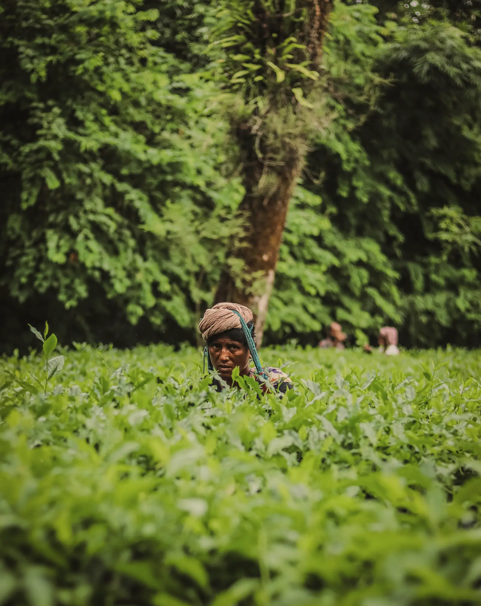
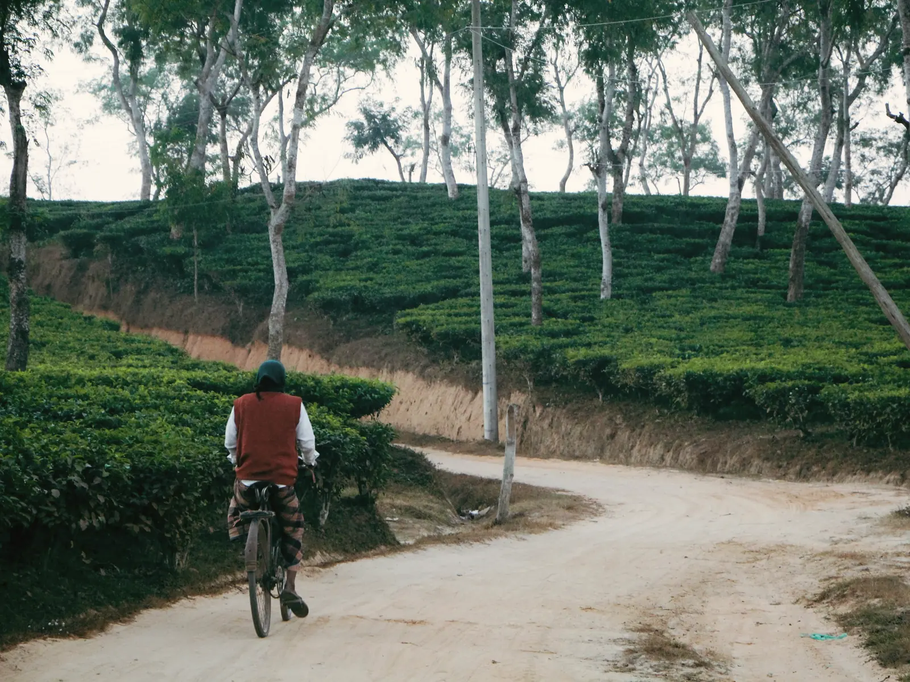
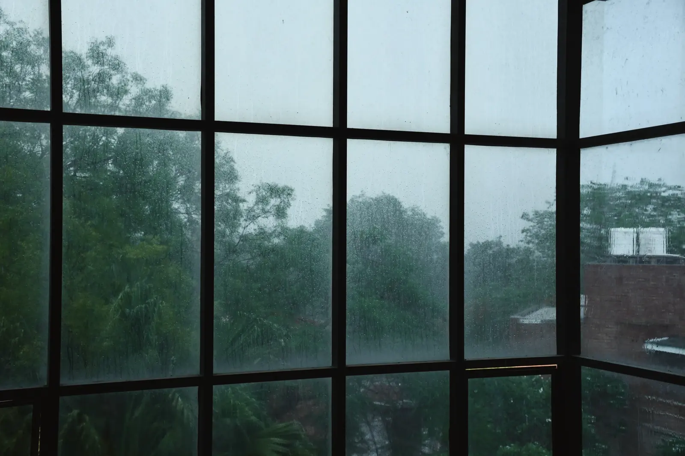
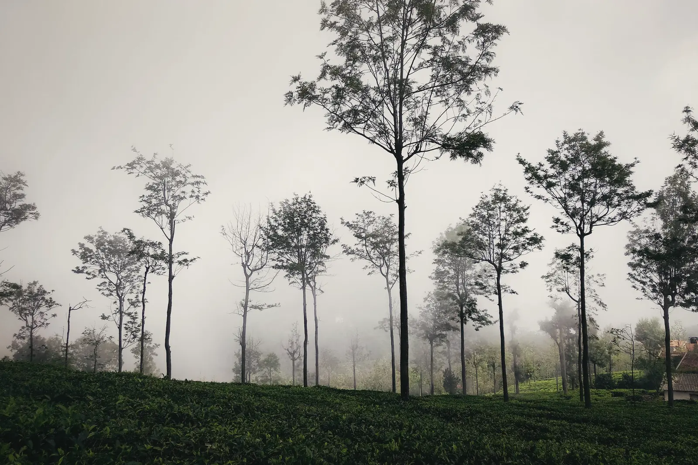
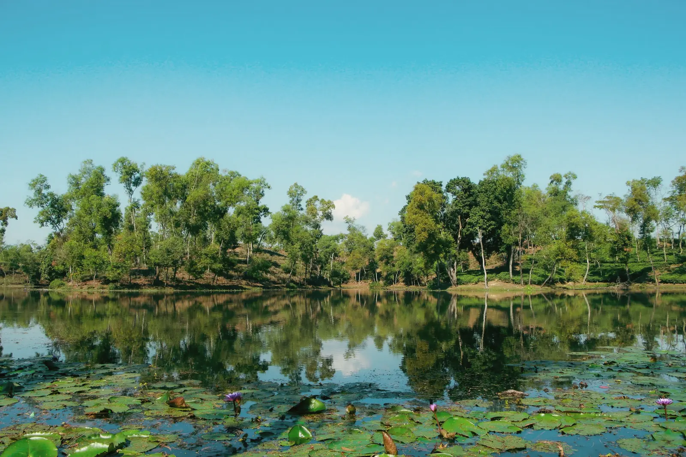
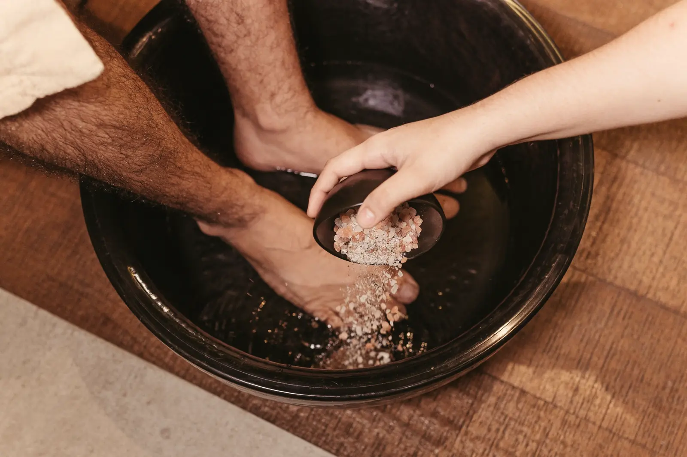

The dawn tea walk
Out at first light with an estate guide, through the sections being plucked that week, to the weighing shed. We keep to the paths and ask before photographing anyone at work.
Included

Most of what we offer is included and happens on the estate. The rest is priced plainly, with times and seasons, so you can plan around the weather.
The estate road, February
A day in winter, for example
Included in every stay. Ask at the veranda the evening before.

Out at first light with an estate guide, through the sections being plucked that week, to the weighing shed. We keep to the paths and ask before photographing anyone at work.
Included
A loop on the estate’s red-earth roads between shade trees, with a stop for tea at the half-way garden. Easy riding; children’s bicycles available.
Included
The lake fills with lotus after the rains. Take the boat out in the early morning, before the flowers close in the heat.
Included

When the rain comes in, the kitchen makes khichuri and beguni and the Tea Room stays open late. The best reason to come in July.
Included
With our guides and drivers, priced per person including transport, and one table by the lake each night.

A walk in the national park with a naturalist, listening for hoolock gibbons. Leech socks are provided in the wet months, and you will want them.
৳3,500 per person

The wetland sanctuary in winter, when the migratory birds arrive. Binoculars, a guide and a packed breakfast; back by lunch.
৳4,800 per person

A table at the water’s edge, lanterns, and a set menu from the Long Veranda. One table a night, so ask early.
৳9,500 for two

Bath House · 10:00–20:00
Two treatment rooms in a small brick bath house by the garden. Nothing elaborate: a foot ritual after a long walk, a massage with warmed oil, river stones from the Dholai.
Therapists are trained in-house. Please tell us of any health conditions when booking.
Nov – Feb
Cold mornings, mist in the tea until nine, birds at Baikka Beel. Our busiest months; book weekends well ahead.
Mar – Apr
The new leaf comes in and the estate wakes up. Warm days, the first plucking, and the year’s best tea.
Jun – Sep
Green everything, rain on the roofs, lotus on the lake. Quieter, softer, and cheaper.
Oct
Clear skies after the rains and long golden afternoons. Puja holidays fill quickly.